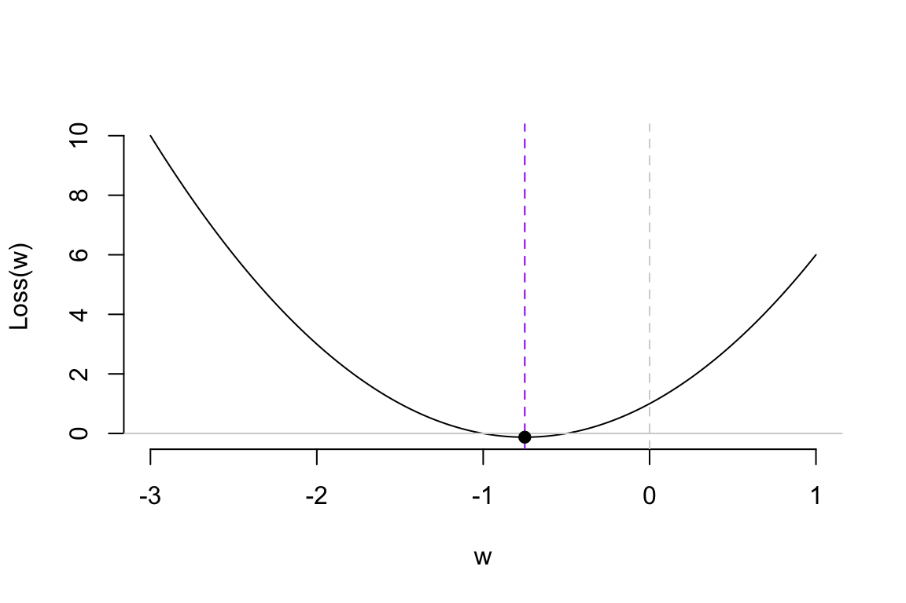
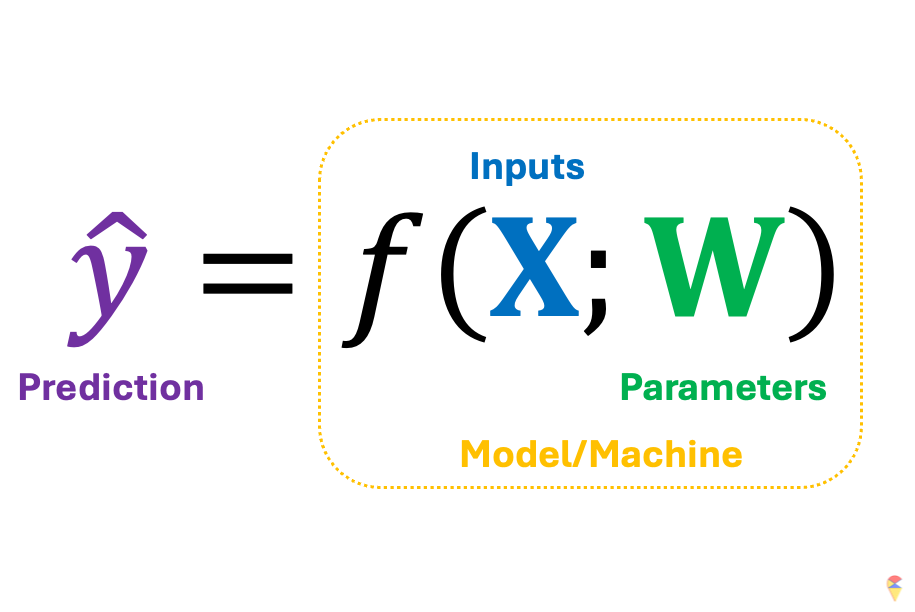
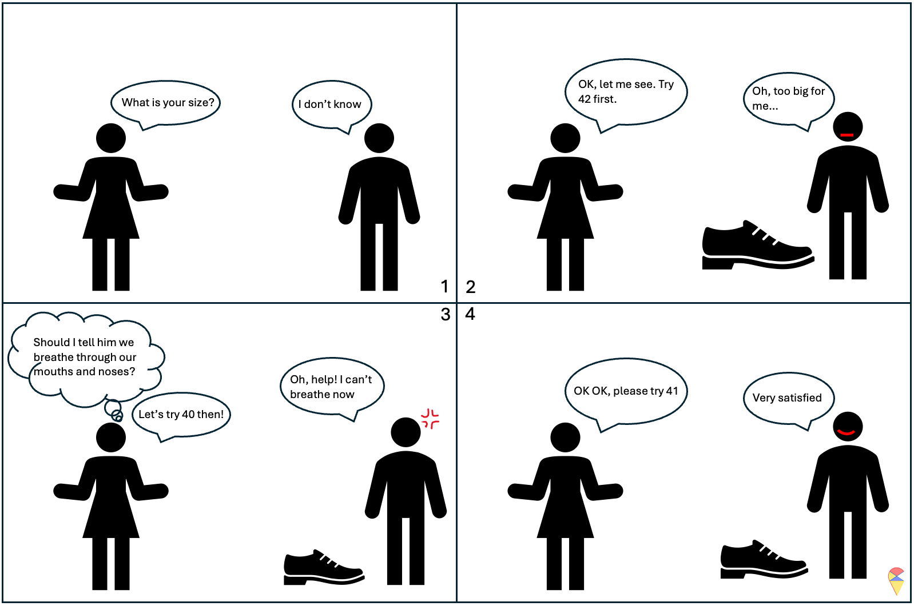
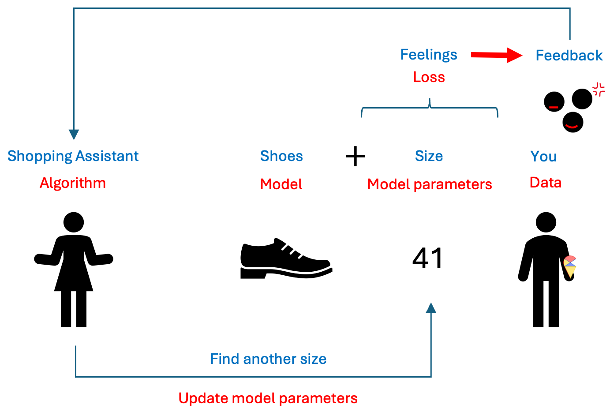
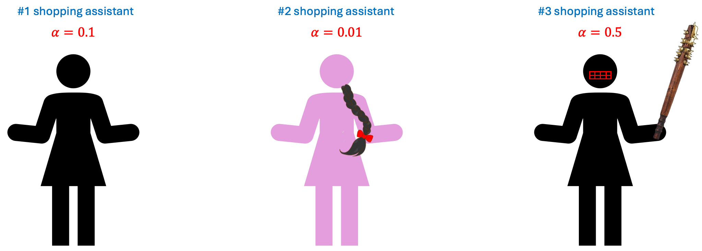
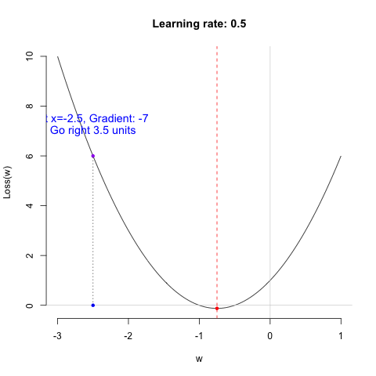
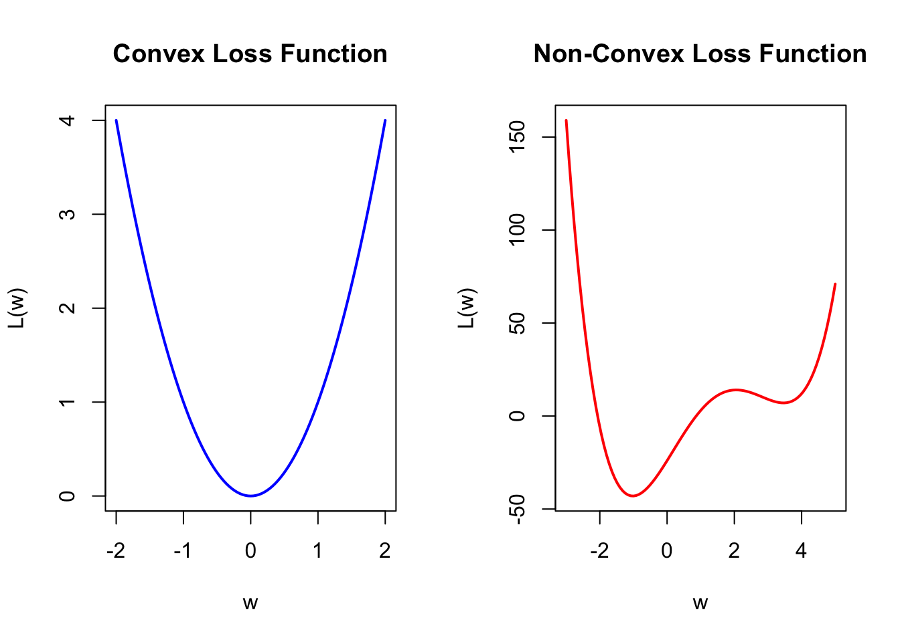

3. Training Algorithm and Implementation
There is an old Chinese saying: “A sharp sword is forged through grinding, and the fragrance of plum blossoms comes from bitter cold.” Indeed, to see a rainbow, one must first endure a storm. Likewise, to obtain a useful model, it must go through training. The models we discussed in the first part of the course mostly do not require so-called training, such as regression models and LDA models. All parameters can be directly computed using formulas. So, what does model training mean? And how do we train a neural network model? Let’s dive into this question next.
3.1 Traning Problem

Let’s return to this concise mathematical notation. We’ve mentioned that a successful machine learning model depends on the model architecture embedded in \(f\) and the appropriate parameters \(\textbf{w}\). The next question is, assuming we have an appropriate \(f\), how do we obtain a suitable set of \(w\)? First, we need to clarify an important premise: we need data to guide us toward the appropriate parameters, or in other words, we need data to train our model. Next, let’s use the shoes analogy again.

Actually, training a model is a bit like trying on shoes. Once the size is set, the shoe is determined, and then we can put our foot in to feel it. It might feel a little loose, or it could be so tight it’s suffocating. If you really can’t find the right fit, you take a step back, switch to a different style, and look for the right size again.
Next, we need to address two key questions:
- How to measure the ‘feelings’ of the current model? What is the standard for good parameters?
- How to update the parameters?
If you remember the loss function we discussed in the first part of the course, the first question becomes a piece of cake. Simply put, we need to compare the model’s predicted values for each individual’s target variable with the actual values of the target variable to calculate the loss. For example, the loss will be the difference between the true value of target variable and the prediction by the model with a set of values of model parameters. (You will experience this firsthand later in Exercise 1 of the Lab.) The set of parameters that gives us the smallest loss is the set of appropriate values we are looking for. So, the training problem can be represented as an optimization problem.
\[ \min_{\textbf{W}} \mathcal{L}( \textbf{y}, f(\textbf{X}; \textbf{W})) \] where \(\textbf{y}\) is the target variable containing all the target values in a dataset, \(\textbf{X}\) is the data matrix of all possible input features, and \(\textbf{W}\) contains all the model parameters. That is, we want to find a set of model coefficients that minimize the model’s loss.
This is somewhat like selecting hyperparameters in a model selection problem. The difference is that we can use algorithms to handle this tedious task. This algorithm is like a shopping guide. It helps you find a better shoe size based on your feedback on comfort until you feel it fits perfectly. I summarized this analogy in the image below.

I hope you all have grasped this concept. However, you may have noticed that there isn’t a corresponding term in machine learning under “feedback.” So, what is the feedback that the model receives based on the loss? Let’s talk about some mathematics.
Assuming our loss function is a simple quadratic curve, our goal is to find the set of \(w\) that gives us the smallest loss in the most efficient way possible. Next, we’ll introduce the efficient method to update model parameters.
NOTE: If you don’t want to delve too deeply into the mathematics behind the algorithms, you can temporarily skip the content in the following sections. Just remember, training a neural network model is like trying on shoes; the ‘comfort’ of the shoes is indicated by the loss function. Then, if the shoes are too big, you reduce the size; if they’re too tight, you look for a slightly larger size.
3.2 Gradient Descent Algorithm
Let me reveal the answer. The analogy for “feedback” in model training is the gradient, and the basic algorithm for training models is called the gradient descent algorithm. So, what is a gradient? Let me refer to another activity I am good at: alpine skiing.
Basic Idea of GD algorithm:
The basic principle of using gradient descent to find the optimal parameters is to start from an initial value and adjust the position based on the gradient information at that point, gradually approaching the optimal value. When updating the parameters, we introduce a scaling factor to control the adjustment magnitude, making the process more flexible. This is done by multiplying the gradient value by a constant \(\alpha\) and we call it as learning rate.
In summary, we can express this process using the following iterative formula:
\[ w_{new} = w_{old} - \alpha \cdot \nabla L(w_{old}) \]
where \(w_{new}\) is the updated model parameter; \(w_{old}\) is the current model parameter; \(\alpha\) is learning rate; and \(\nabla L(w_{old})\) is the gradient of the loss function at the current weight. Next, we’ll use a simple example to demonstrate how the gradient descent (GD) algorithm works.
Demo of GD algorithm:
Regarding the learning rate, we can think of it as the working style of the shopping guide (algorithm). Different learning rates lead to different learning outcomes. Let’s look at the following example.

So, which shopping guide would you like to help you choose shoes? Let’s take a look at their performance.


Shopping guide 0.01 is indeed very gentle. She is so meticulous that you might even need to take a fika break in the middle to choose the right shoes. As for Shopping guide 0.5… she’s too impatient, so never mind.
Remark: I want to emphasize that the characteristics of the shopping guides are relative. Whether they are efficient, impatient, or overly gentle depends on the nature of the data itself. Therefore, the learning rate is often considered a hyperparameter. Sometimes, you need to try several shopping guides to ensure you truly find the perfect pair of shoes.
3.3 GD algorithm for training ANN
The loss function of a neural network model is far more complex than the loss function in the example above. There are two key issues here, which I will discuss broadly without going into detail. Additionally, some finer points will be explored further in the next section on deep learning.
First, the loss function of a neural network model is generally a non-convex function. In the R plots below, the left side shows a convex function similar to our previous simple example. The characteristic of a convex function is that starting from any point, we can move toward the optimal value based on the gradient information. On the right side is a simple non-convex function. This type of function has the characteristic of having local optima. This characteristic can lead to many issues, as the algorithm is particularly dependent on the choice of the initial value. With an inappropriate initial value, the gradient information may guide you toward a local optimum rather than the global optimum. Therefore, the choice of the initial value is an important issue. We will leave it at that for now, and we will discuss it further in the Lab and in the next section.

Another issue is that neural network models have many model parameters, unlike the loss function mentioned above, which has only one optimization variable. Additionally, due to the structure of neural network models, we have parameters at different layers. This characteristic makes calculating the gradient values for each model parameter quite complex. Therefore, we typically use the backpropagation algorithm to compute the gradient values. The principle is to first calculate the model’s loss based on the initial model parameters, then compute the gradient for each parameter layer by layer, moving backward from the last layer based on the loss, and finally use the gradient descent algorithm to update the parameters.
Even though these reasons make training neural network models quite complex and sometimes an incomprehensible black box operation, the term “black box” means that we need to iteratively experiment multiple times based on the model’s performance to arrive at the final model. This is somewhat similar to tuning hyperparameters. Nevertheless, when there is sufficient data, we can often train neural network models that perform well.
3.4 Implementation in R

In this course, we use the Keras package to implement the training of neural network models in R. I’ve placed specific introductions, explanations, and operations in the Lab. I recommend that you take a look there before continuing to read. A small gate to Lab: here.